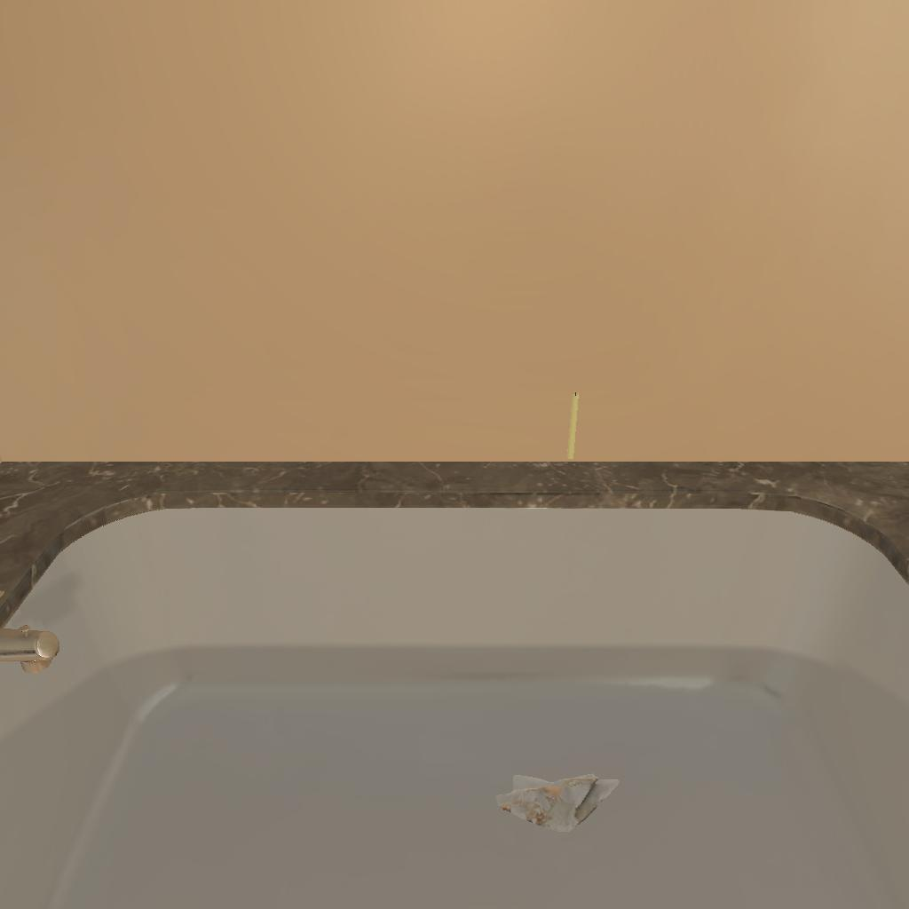

---------------------------------------------------------task: 11---------------------------------------------------------
--------------------------------------------------------------------------------------------------------------------------------------------------------------------
--------------------------------------------------------------------------------------------------------------------------------------------------------------------
Step:--------------------------------------------------------------------------4-------------------------------------------------------------------------------
----------------------------------------
VLM Prompt:
**Task**
Please perform as an embodied AI agent. Our final objective is to put a clean soapbar in bathtubbasin. Below is the plan for completing the task, the current observation, alongside historical data and admissible actions for the next step. Please determine the best action for the next step!
**Plan**
Below is a detailed step-by-step plan to complete the task.
1. Find a soapbar.
2. Pick up the soapbar.
3. Find a sink or basin.
4. Clean the soapbar with the sink or basin.
5. Find a bathtub basin.
6. Place the cleaned soapbar in the bathtub basin.
**Current Observation**
Displayed is an image capturing the current position of the agent.
**History Information**
Displayed are the previous observations with their corresponding actions.
State 1:
1. Step Index in the Plan: 1
2. Objects: Countertop, Sink, Partial View of Toilet
3. Action: go to cabinet 1
State 2:
1. Step Index in the Plan: Unspecified
2. Objects: Toilet, Sink, Countertop, Cabinet (partially visible)
3. Action: open cabinet 1
State 3:
1. Step Index in the Plan: 1
2. Objects: Sink, Countertop, Toilet (partially visible), Cabinet 1 (already opened)
3. Action: go to cabinet 2
State 4:
1. Step Index in the Plan: 1
2. Objects: Countertop, Sink, Bathtub Basin, Soap-like Object (potential soapbar)
3. Action: go to bathtubbasin 1
**Admissible Actions**
(1): go to bathtub 1
(2): go to toilet 1
(3): go to cabinet 1
(4): go to countertop 1
(5): go to sink 1
(6): go to sinkbasin 1
(7): go to garbagecan 1
(8): take cloth 2 from bathtubbasin 1
(9): take faucet 3 from bathtubbasin 1
(10): take candle 3 from bathtubbasin 1
**Analysis Guideline**
1. Analyze the history and current observation, and then determine our current step in the plan and our current place.
2. List all visible objects related to the task in the current observation, without summarizing any as "various items."
3. Analyze the objects in the current observation based on the history and the requirements for the current step, and then determine if we can complete the step with the current observation.
4. Analyze and decide on the most appropriate action to take.
5. Summarize the analysis using the following format: "Analysis: [The summarization of the analysis], The Most Appropriate Action: (i which is the integer.): [Selected action]"
**Notes**
1. We must complete each step of the plan in order and cannot skip steps when the previous ones are not finished.
2. For "Go to" actions listed as "go to xxx [n]", interpret this as there are n distinct actions available: "go to xxx 1", "go to xxx 2", ..., "go to xxx n". Select one specific action from these options instead of using "go to xxx [n]".
3. If receptacles such as drawers, cabinets, and so forth are closed in the current observation, we may try to open them.
4. Pay attention to synonyms and ensure clarity in the terms used.
5. We must determine and provide the single action which must be in the **Admissible Actions**.
6. If there is no history available, we are at the first step and the current place is "Unknown".
**Answer**
Please select the most suitable action by following the **Analysis Guideline**, keeping the above **Notes** in mind.
----------------------------------------
----------------------------------------
VLM Response:
Analysis: The current observation shows the agent's view of a bathtub basin with a soap-like object inside it. The history indicates that the agent has found a potential soapbar in State 4 observation and approached the bathtub basin. According to the plan, we are currently at step 6, where the agent needs to place the cleaned soapbar in the bathtub basin. Since the soap-like object is already in the bathtub basin, the agent needs to ensure that it is indeed a soapbar and that it is clean. However, there are no actions available in the admissible actions list that directly allow the agent to confirm the cleanliness of the soapbar or to clean it if necessary. The best course of action would be to take the soap-like object from the bathtub basin to verify it.
The Most Appropriate Action: (8): take cloth 2 from bathtubbasin 1
(Note: The action describes taking a cloth, but it's assumed this is a mislabeling in the admissible actions, as the object in question appears to be a soap-like object from the history information. If the action is not mislabeled and the object is indeed a cloth, then there is no admissible action available that directly corresponds to confirming the soapbar's cleanliness or placing a clean soapbar in the bathtub basin.)
----------------------------------------
----------------------------------------
>>> Refine VLM Response and Get Pure Action: take cloth 2 from bathtubbasin 1
(Note: The action describes taking a cloth, but it's assumed this is a mislabeling in the admissible actions, as the object in question appears to be a soap-like object from the history information
----------------------------------------
-----------------------------------------------------------------
Running time: 9.311847686767578 seconds
Total Money: 0
-----------------------------------------------------------------
-----------------------------------------------------------------
Summarization Prompt:
**Context**
Analysis: Since there is no history information, we are at the first step in the plan, which is to find a statue. The current place is unknown. In the current observation, we see a floorlamp next to an armchair with a small table that has a small object on it, which could potentially be the statue we are looking for. Since the plan requires us to find a statue first and it appears there might be one on the table next to the armchair, we should investigate this object to determine if it is the statue we need.
The Most Appropriate Action: (1): go to armchair 1
**Summary**
1. Step Index in the Plan: 1
2. Objects: Floorlamp, Armchair, Small Table, Small Object (potential statue)
3. Action: go to armchair 1
**Context**
Analysis: The current observation shows the agent's view of a bathtub basin with a soap-like object inside it. The history indicates that the agent has found a potential soapbar in State 4 observation and approached the bathtub basin. According to the plan, we are currently at step 6, where the agent needs to place the cleaned soapbar in the bathtub basin. Since the soap-like object is already in the bathtub basin, the agent needs to ensure that it is indeed a soapbar and that it is clean. However, there are no actions available in the admissible actions list that directly allow the agent to confirm the cleanliness of the soapbar or to clean it if necessary. The best course of action would be to take the soap-like object from the bathtub basin to verify it.
The Most Appropriate Action: (8): take cloth 2 from bathtubbasin 1
(Note: The action describes taking a cloth, but it's assumed this is a mislabeling in the admissible actions, as the object in question appears to be a soap-like object from the history information. If the action is not mislabeled and the object is indeed a cloth, then there is no admissible action available that directly corresponds to confirming the soapbar's cleanliness or placing a clean soapbar in the bathtub basin.)
Please summarize the context by following above examples when providing the summary, and ensure that only the summary is included, without any extra explanation.
**Summary**
-----------------------------------------------------------------
-----------------------------------------------------------------
Summarization Response:
1. Step Index in the Plan: 6
2. Objects: Bathtub Basin, Soap-like Object
3. Action: take cloth 2 from bathtubbasin 1
-----------------------------------------------------------------
-----------------------------------------------------------------
Text Observation:You pick up the cloth 2 from the history information.
-----------------------------------------------------------------
UNSUCCEED